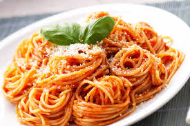

Home
Spaghettis

Description
Spaghetti is a classic Italian pasta dish consisting of long, thin, cylindrical noodles typically served with various sauces. The most traditional and beloved version is Spaghetti alla Carbonara (creamy egg-based sauce with pancetta) and Spaghetti al Pomodoro (simple tomato sauce). It's a versatile, quick-to-prepare dish that's become a staple worldwide.
Ingredients
- 3 tbsp olive oil
- 3 garlic cloves, thinly sliced
- 800g (28 oz) canned whole tomatoes or crushed tomatoes
- 1 tsp sugar (balances acidity)
- Fresh basil leaves
- Salt and black pepper to taste
- Grated Parmesan cheese for serving
Preparations
- Cook the Spaghetti
- Prepare Tomato Sauce (while pasta cooks)
- Combine Pasta and Sauce
- Serve